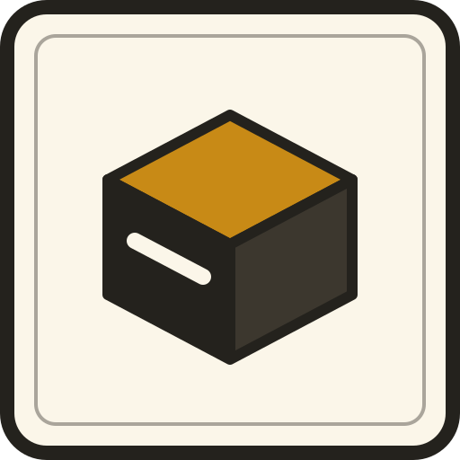

bkn
A backend you own, small enough to read, that outlives the tool that wrote it. Documents, settings, identity, files, an event log, a scheduler and signed webhooks — over one embedded SQLite file. No database server, no runtime to install, no dashboard, no account.
Install
Linux x86_64, statically linked, no runtime dependencies. Versions are
content hashes, not semver: a server publishes a binary at
/version and /dl/bkn, and bkn update
verifies and smoke-tests the download before an atomic swap that keeps a
.bak.
Seven primitives
It replaces an 85k-line Node/Express/MongoDB backend whose nine ported domains became roughly 1,700 lines of scripts, with almost nothing leaking back into Go.
Namespaced documents
Collections of JSON documents with normalization declared on the collection, atomic update operators under compare-and-set, preconditions, self-bounding retention and grouped counts.
Typed settings
Configuration with types, optionally encrypted at rest. An encrypted write with no key configured is an error, never a plaintext write.
Identity, without billing
Short-lived JWTs, single-use rotating refresh tokens, platform and organization roles. What it deliberately does not hold is billing — that is what made the old backend unchangeable.
Namespaced blobs
Type allow-lists verified from the bytes, atomic name claims, and signed URLs for private namespaces. Storage is keyed by content hash, not by a caller-supplied path.
Append-only log
A stream per namespace with grouped stats. An append-only log
with no retention is a disk-space incident waiting to happen, so
prune is part of the surface.
Scheduled scripts
Jobs claimed with a compare-and-set so two tickers — or a manual tick racing a daemon — cannot fire the same job twice. Overlapping runs are skipped, not piled up.
The escape hatch
Most of what a backend does is not core — it is a script. Stripe webhooks, forms, CSV exports, i18n, redirects, a CMS: each is a handler over documents plus a public URL.
The inbound counterpart
bkn.http.fetch lets a script call out; hooks let
the world call in — with origin scoping, a rate limit and a body cap
declared per hook.
A session
What it deliberately will not do
Each of these was asked for by a real codebase and refused on purpose. Refusing is how the admission rule earns its keep — a rule that only ever admits is not a rule.
| Refused | Because |
|---|---|
| Transactions | Every write that must be atomic is one statement. A transaction is caller-held state, and a one-shot CLI over a stateless API has nowhere to hold it — locks is the multi-statement answer. |
| Joins | Denormalize and pay the write amplification knowingly. Admitting joins is where bkn becomes SQL. |
| Regex / LIKE | A substring guard is usually a flag field that was never written down. |
| Multi-field sort | Ordering is already total — a tiebreak never has to be asked for. |
| Age-based retention | Count-based is what was measured; events prune --older-than covers the log-shaped case. |
| An admin UI | A UI is a client, not an interface. A CLI can be introspected; a screen cannot. |
What gets in
bkn should make a complex system smaller, not merely possible. The bar is not “could this app run on bkn” but “would this app be less code on bkn”. An application bkn cannot serve is a gap to close, not a boundary to defend — and the failure mode that rule guards against is this project’s own origin, a core that grew to 85k lines because every need became a feature.
Fit-checked against a 131k-line control plane, three primitives took it from 33 statements beyond the store’s surface to 11 — and all 11 were refused rather than absorbed. The core grew by three primitives and no query language.
The contract is the product
A clean-room reimplementation in another language,
machin-bkn, passes the
same 113-assertion live suite, unmodified. The contract is
portable, not a description of one codebase. When bkn stops being useful what
remains is a .db file of plain JSON documents and a directory of
ordinary JavaScript — nothing has to be migrated off, because nothing was ever
locked in.
Apache-2.0 · one static binary ·
bkn guide teaches itself offline.